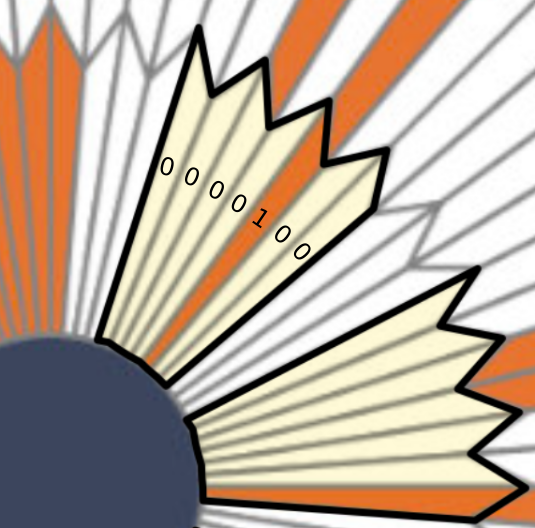

Système binaire⚓︎
1- Jouons à la marchande⚓︎
Principe du «jeu»
- Par groupe de 3, désigner un.e marchand.e et deux acheteur.euse.s.
- Le ou la marchand.e doit annoncer une somme de £eibits à payer. Elle ne rend pas la monnaie.
- Les acheteurs disposent devant eux d'un jeu de 8 billets de 1, 2, 4, 8, 16, 32, 64 et 128 £eibits (un et un seul de chaque). Ils doivent laisser face visible le(s) billet(s) nécessaire(s) pour payer la somme demandée et retourner (sans les changer de place) ceux qui ne servent pas.
Les billets distribués sont à disposer ainsi:

Par exemple, voici comme on pourrait payer 100 £eibits:

À vous de jouer!
- À tour de rôle, choisir quelques montants et les payer. Y a-t-il plusieurs choix de billets possibles pour un montant donné?
- Quel montant maximum peut-on payer?
- Essayer de trouver un montant impossible à payer (inférieur à ce maximum).
2- Bilan⚓︎
À savoir !
1 bit = 1 chiffre binaire 0 ou 1
1 octet = 8 bits
Sur 1 octet on peut écrire tous les entiers de 0 à 255
3- Conversions Binaire ↔ Décimal⚓︎
Conversions
Il est utile de connaître les puissances de 2 pour convertir rapidement de l'écriture binaire vers l'écriture décimale.

Par exemple \(10110101_2=128+32+16+4+1=181\).
À vous de jouer!
Vérifier que \(101010_2\) en binaire correspond au nombre \(42\) en décimal.
-
On peut utiliser l'algorithme de soustraction: on soustrait du nombre la plus grande puissance de 2 possible, et on recommence...
Par exemple: \(181 = 128 + 53 = 128+32+21=128+32+16+5=128+32+16+4+1\), donc \(181 = 10110101_2\)
-
On utilise l'algorithme de divisions: on effectue les divisions successives du nombre par 2. L'écriture en binaire est donnée par les restes lus de bas en haut.

À vous de jouer!
Comment le nombre écrit \(51\) en décimal s'écrit-il en binaire?
4- Le parachute de Persévérance⚓︎
Lors de sa descente vers la planète Mars le 18/02/2021 (voir la section Liens), le rover Perseverance de la Nasa a freiné sa chute grâce à un parachute qui a intrigué quelques internautes du forum Reddit.

Les zones blanches et rouges se décomposent comme ceci, sur 4 couronnes:

Ces internautes ont rapidement pensé que l'alternance du blanc et du rouge, sur des secteurs bien définis, pouvaient s'interpréter comme un code binaire...
Décodage
Après quelques essais infructueux, ils ont remarqué que les 80 élements de chaque couronne pouvaient se décomposer en 8 groupes de 10 élements (c'est-à-dire 10 bits) chacun débutant par 3 éléments blancs.
En voici les deux premiers groupes mis en relief:

Sur le premier groupe, en supposant que blanc vaut 0 et rouge vaut 1, on obtient le nombre binaire 000 0100 qui vaut 4 en décimal. Et D est la quatrième lettre de l'alphabet.
À vous de jouer!
Sur la feuille mise à votre disposition, repérer les 3 prochains groupes, convertir en binaire puis décoder la lettre.
Vous devez trouver les lettres A, R et E.
À vous de jouer!
Faire de même sur les trois couronnes suivantes.
La dernière est différente des trois autres, saurez-vous l'interpréter correctement?
Les zones blanches et rouges se décomposent comme ceci :

Liens
Vidéo déploiement du parachute:
Générateur de parachute:
https://sjwarner.github.io/perseverance-parachute-generator/
5- Codage des caractères⚓︎
Codage des caractères
En Informatique, les caractères (pas seulement les lettres de l'alphabet) sont encodées à l'aide d'une table, par exemple la table ASCII ou plutôt maintenant la table Unicode qui la prolonge.
Par exemple, en consultant cette table ASCII, on constate que le caractère «O» correspond à l'entier 79, c'est-à-dire 01001111 en binaire. Et le caractère «K» à 75 donc à 01001011.
Le mot «OK» sera donc codé en binaire par 01001111 01001011.
À vous de jouer!
Décoder la phrase 01110100 00100111 01100001 01110011 00100000 01101100 01100001 00100000 01110010 11101001 01100110 00111111.
6- Conversions avec Python⚓︎
Du décimal vers le binaire⚓︎
Pour obtenir l’écriture binaire d’un nombre entier écrit en décimal, par exemple 2023, il suffit de taper dans un terminal:
bin(2023)
Faites-le ci-dessous:
Remarque
Attention, ce qui est renvoyé par cette fonction est une chaîne de caractères (entre simples guillemets). L’écriture en binaire de 2023 est donc 11111100111. Le 0b indique que c’est... du binaire.
Du binaire vers le décimal⚓︎
C'est encore plus simple. Il suffit de taper dans un terminal le nombre binaire précédé de 0b. Vérifiez que 101010 en binaire correspond à 42 (le sens de la vie).
À vous de jouer!
Pour répondre aux questions suivantes, effectuer les conversions nécessaires dans le terminal ci-dessus.
- Quel est le plus grand nombre que l'on peut écrire avec 8 bits (c'est-à-dire un octet)? Avec deux octets?
- Choisir 3 nombres. Les convertir en binaire.
- Calculer les doubles de ces 3 nombres et les convertir en binaire.
- Comment multiplie-t-on les nombres par 2 en binaire?